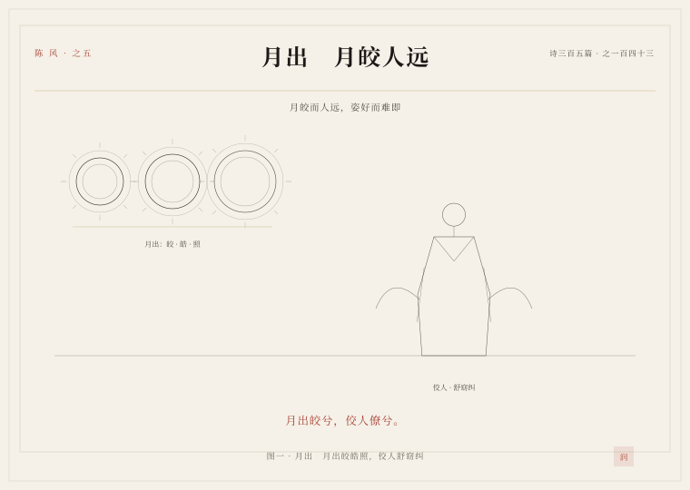
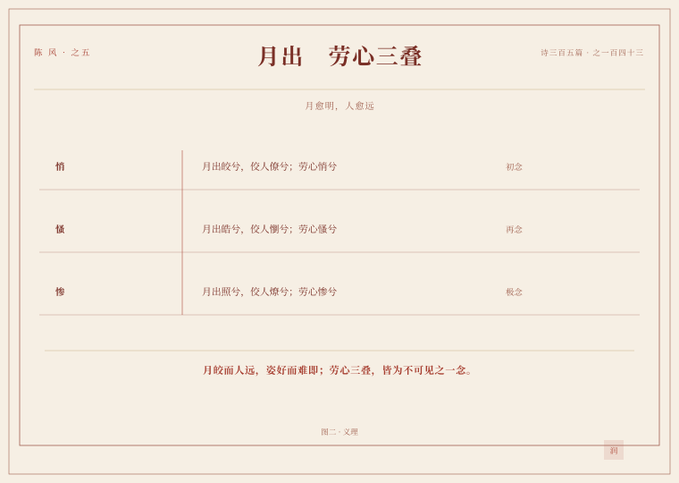

第一百四十三篇 月出
陈风 · 之八 SJ143
朗读 · 普通话
依经文原文朗读，章次不读出；配古琴底乐，不改速、不加拖腔。全库同一音色（豆包 TTS），非播音员录制。
一 解题
诗三判：
- 谁在说：月下怀人者。见月出而思所美，念其仪容姿态，不可即见，劳心悄然而忧。
- 说什么事：三章换「皎／皓／照」月色，「僚／懰／燎」容色，「窈纠／懮受／夭绍」姿态，「悄／慅／惨」忧思。月三变、人三状、忧三叠，所同者是「安得见之」一念。
- 为何编在此：陈风前数篇写巫舞、会遇、赠椒，皆有人间声色；此篇独以月色写怀，是国风里少见的纯粹月色之诗。其失不在政，在人不可见；与《宛丘》之婆娑、《东门之枌》之市井赠椒，分开读。
《毛序》：“《月出》，刺好色也。在位不好德，而说美色焉。”
朱子《诗集传》：“兴也。皎，月光也。佼人，美人也。僚，好貌。窈，幽远也。纠，愁结也。悄，忧也。○此亦男女相悦而相念之辞。言月出则皎然矣，佼人则僚然矣。安得见之，舒窈纠之情乎？是以为之劳心而悄然也。”二章：“兴也。懰，好貌。懮受，忧思也。慅，犹悄也。”三章：“兴也。燎，明也。夭绍，纠紧之意。惨，忧也（当作懆）。”
本库的看法：《月出》是一首以月色起兴、写月下怀人而不可即的诗。
毛序以为「刺好色，在位不好德而说美色」；朱子读作「男女相悦而相念之辞」，不坐实在位之人。本库从朱读辞面：诗中无政事可指，无讥刺可加；毛序「好色不好德」一层，只作为陈风世风的背景，不把诗读成讽谏。
须辨：此篇之美在月与姿，此篇之忧在「不可见」；不可套用陈风他篇的讽意，把月色读成刺色。
断语：月皎而人远，姿好而难即；劳心三叠，皆为不可见之一念。
先辨五事：「皎／皓／照」皆月色明暗之别，不是日光；「佼人」是美人，佼通姣；「僚／懰／燎」皆好貌、明貌，不是官职；「窈纠／懮受／夭绍」皆舒徐姿态之叠词，不是地名；「悄／慅／惨」皆忧思之貌，不是凄惨哭泣。
二 经文
第一章
月出皎兮，佼人僚兮。
舒窈纠兮，劳心悄兮。
第二章
月出皓兮，佼人懰兮。
舒懮受兮，劳心慅兮。
第三章
月出照兮，佼人燎兮。
舒夭绍兮，劳心惨兮。
分章：三章，章四句。
三 韵读
- 一章：皎、僚、纠、悄，宵幽通押；「纠」幽部，余皆宵部。
- 二章：皓、懰、受、慅，幽部；一章幽宵相贯，二章纯幽。
朱子叶「懰，朗老反；受，时倒反」。
- 三章：照、燎、绍、惨（懆），宵部；「惨」当作懆，忧也，与照、燎、绍相叶。
读法：三章韵脚由宵而幽而宵，月色由皎而皓而照，忧思由悄而慅而惨；「舒」字三章不改，姿态之舒缓是全诗的底。
四 字义与名物
- 皎：月光洁白明亮。皓：月光亦白，与皎相次。照：月光遍照。
- 佼人：美人。僚：好貌。懰：好貌（埤苍作嬼，妖也）。燎：明也，言其色明燎。
- 舒：迟缓、安舒。窈纠：幽深远僻、愁结之姿。懮受：忧思舒缓之貌（懮同忧）。夭绍：纠紧、婉转之态。
- 劳心：忧心。悄：忧也。慅：犹悄，忧也。惨：忧也，朱传谓当作「懆」；从朱传，惨为懆之假借，存异文。
五 今译
月亮出来皎皎明亮，那人美人样美好。举止舒缓幽远婉转，我忧思悄悄难安。
月亮出来白白朗朗，那人容貌姣好动人。举止舒缓含忧带思，我忧心忡忡不宁。
月亮出来遍照四方，那人光彩明燎照人。举止舒缓婉转轻盈，我忧愁深长难释。
六 章旨
- 一章：写皎月、僚好、窈纠、悄然。月初出而光皎，人初见而姿好；一念不可即，劳心悄然。
- 二章：写皓月、懰好、懮受、慅然。月转明而色白，思渐深而带忧；姿态与忧思相缠。
- 三章：写照月、燎明、夭绍、惨然。月遍照而人益明，思至深而婉转难释；三叠收于一忧。
- 总收：月色三章只在天上，美人三章只在念中；通篇无一步相近之写，所止者是「不可见」。
七 诗教
- 兴：以月出皎然起兴，以月光之明洁，兴美人之色好；月不以人明，人因月想。
- 观：观怀人之思如何随月色递进——皎而皓而照，悄而慅而惨；月渐明，忧渐深。
- 群：怀者与所美者遥相对待，中间唯月；月是共见之物，人是独念之人。
- 怨：怨在「劳心」一叹；不怨其人不至，不怨其德不美，所叹者是相见无由。
八 分寸与边界
- 不可套用陈风他篇的讽意，把此篇读成刺好色、刺淫乱。诗面只是月下相念；一坐实讥刺，纯粹的月色就变成了谏书。
- 不可把此篇与《宛丘》婆娑之舞、《东门之枌》市井赠椒混读。彼篇有人间歌舞相与，此篇独对月色；一混，风情与怀思两失。
- 不可把「佼人僚／懰／燎」写成具体五官肖像。诗所写是容色姿态的总貌；一摹眉眼，白描之姿就成画像。
- 不可把「舒窈纠／懮受／夭绍」解作心理愁苦之词。它们是举止舒缓之姿，忧在劳心，不在姿态；一解作愁苦，舒字落空。
- 不可把「惨」读成凄惨、悲痛哭泣。惨（懆）是忧思；一读成悲恸，劳心三叠就成哀哭。
- 不可为坐实毛序而补出在位之人、美色之事。诗中无主名；一补本事，相念之辞就被史事压扁。
九 存疑
- 诗旨：毛序「刺好色，在位不好德而说美色」；朱子「男女相悦而相念之辞」。本库从朱读辞面，毛序说存为背景。
- 「懰」：毛诗懰，埤苍作嬼，妖也；一音柳，好貌。两读并列，从好貌。
- 「懮受」：经文或作「忧受」，懮同忧；字形异而训不殊。从懮受。
- 「惨」：朱传「当作懆」，忧也；一说读惨，凄戚貌。从懆为忧，存异文。
- 女子抑男子：诗中「佼人」不别男女；旧说或以为男子思女，或以为女思男。诗面不指实。
- 年代与作者：诗作于陈风何时，作者何人，诗中无征；不可据世系推补。
十 跨典
- 《论语·子罕》：“吾未见好德如好色者也。”——好色与好德之辨；毛序「不好德而说美色」即此义，本库以为诗面不主此训，存为旁参。
- 《孟子·梁惠王下》：“寡人有疾，寡人好色。”——好色为情所不免；孟子之教在与百姓同之，与陈风世风相对读。
- 《礼记·孔子闲居》：“天无私覆，地无私载，日月无私照。”——日月之照无私；此篇「月出照兮」取照之明，不取无私之义。
- 《诗经·陈风·宛丘》（SJ136）：「子之汤兮，宛丘之上兮」，婆娑鼓舞于人间；彼篇声色在庭，此篇怀思在月，同卷两境，不可互套。
- 《诗经·郑风·野有蔓草》（SJ094）：「邂逅相遇，适我愿兮」；彼得一时之遇，此终章不可即见，一遇一思，正可对读。
十一 双卡与图
六对：
| 皎／皓／照（月色明暗） |
皎／皓／照（日光） |
| 佼人（美人） |
佼人（姣好自夸） |
| 僚／懰／燎（好貌明貌） |
僚／懰／燎（官职／火光） |
| 窈纠／懮受／夭绍（舒缓姿态） |
叠词（地名／愁苦） |
| 悄／慅／惨（忧思貌） |
惨（凄惨哭泣） |
| 不可见（劳心之由） |
不可见（其人已去） |

图一 · 月出 月出皎皓照，佼人舒窈纠

图二 · 月出 劳心悄慅惨，安得见之
读图三处：
- 月不以面铺：图一月轮以双线出轮廓，月光用留白与细线穿出，不填月色块面；朱线只作一两处小记。
- 人只剪影：图一佼人作无脸剪影，见姿不见貌；姿态以肩背轮廓与衣袖两笔出之，不画五官。
- 三叠忧思：图二「皎—僚—纠—悄／皓—懰—受—慅／照—燎—绍—惨」三行相次，末行朱线收在「不可见」；图中无相会之人。